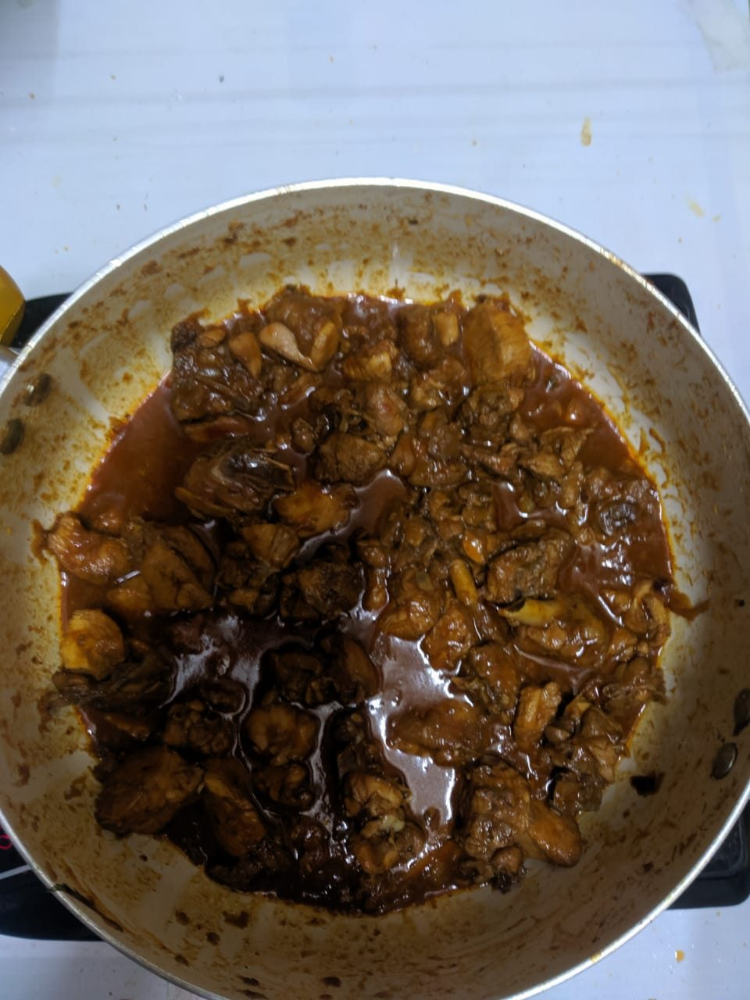

Contains: mustard
Ingredients
Quantities for 4.
- 800g bone-in, cut into curry pieces Chicken
- 1 cup fresh grated Coconut
- 2 tbsp Coriander Powder
- 1 tsp Cumin Seeds
- 1 tbsp, coarsely crushed Black Pepper
- 5, broken Dried Red Chilli
- 1/4 tsp Fenugreek Seedsany more turns the gravy bitter
- 1 tsp Mustard Seeds
- 2 medium, finely sliced Onion
- 8 cloves, crushed Garlic
- 1.5 inch piece, chopped Ginger
- 2, slit Green Chillioptional
- 2 sprigs Curry Leaves
- 1 tsp Turmeric
- 3 tbsp Coconut Oil
- 1 tbsp Vinegarstands in for kachampuli, the dark Coorg sour vinegar; a spoon is enough. It is added off the heat at the very end
- a small handful, chopped Coriander Leavesto finishoptional
- to taste Salt
- 300 ml Water
Cookware
stovetop, kadhai, blender
Checked against the ingredient list for ten allergens: milk, egg, fish, crustaceans, tree nuts, peanuts, sesame, mustard, soy and gluten. Brands vary, so read the label on anything new to you.
Before you start
- Rub the chicken with the turmeric and 1 tsp salt then cover and refrigerate it 30 minutes before cooking.
- Grate the coconut fresh if you can; frozen grated coconut, thawed, is the next best thing.
- Roast and grind the masala first so the gravy can go straight in. The roasted paste sits happily for an hour.
Method
- Dry-roast the coriander powder, cumin, dried red chilli, fenugreek and mustard seeds in a small pan over low heat for 2 minutes, until they smell nutty and the mustard begins to pop.Low heat only. Fenugreek scorches first and its bitterness carries through the whole pot.
- Add the grated coconut to the same pan and roast, stirring constantly, 6 to 8 minutes until it is an even reddish brown.
- Grind the roasted coconut and spices with 150 ml water to a smooth, thick paste and set aside.
- Heat the coconut oil in a heavy pan and fry the onion until soft and gold, about 8 minutes.
- Add the garlic, ginger, green chilli and curry leaves and fry 2 minutes, until the raw garlic smell is gone.
- Add the chicken and fry on medium-high for 6 minutes, turning the pieces, until the flesh is opaque and lightly coloured.
- Stir in the ground coconut masala and fry 4 minutes until the oil separates at the edges and the paste darkens a shade.This frying step is what stops the gravy tasting raw and chalky. Wait for the oil.
- Pour in the remaining 150 ml water and the crushed black pepper, cover and simmer on low 20 minutes until the chicken is tender at the bone.
- Uncover and simmer 5 minutes more to thicken, then check the salt.
- Off the heat, stir in the vinegar and the coriander leaves and rest 5 minutes before serving.Kachampuli is potent and this curry needs only a hint of it. Taste before adding a second spoon.
Safe temperatures: Chicken and duck are done at 74°C / 165°F, taken at the thickest part and clear of the bone. Reheat leftovers to 74°C / 165°F. FoodSafety.gov
Storage
Keeps 3 days refrigerated. Reheat over low heat with a little water; the coconut gravy splits if boiled hard.
Nutrition Medium estimate
High protein: 46 g a serving, 40% of the calories
| Per serving364 g | Per 100 g | |
|---|---|---|
| Calories | 460 kcal | 127 kcal |
| Protein | 45.7 g | 13 g |
| Carbohydrate | 15.6 g | 4 g |
| of which sugars | 3.9 g | 1 g |
| Fibre | 5.3 g | 2 g |
| Fat | 24.1 g | 7 g |
| of which saturated | 16.1 g | 4 g |
| of which unsaturated | 5.4 g | 1 g |
Ingredients given to taste count as zero, so the real figures run a little higher. Nearest database match used for curry leaves. Estimated from raw ingredients using USDA FoodData Central.
More like this: Gluten-free Indian recipes · Dairy-free Indian recipes · Karnataka recipes
Times, yields, allergens and nutrition are guidance. Use your own judgement on doneness and on storing. More in About.